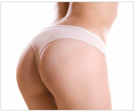

Descripción de la cirugía facial y cuándo se recomienda.

Descripción de la cirugía de nariz y cuándo se recomienda.
Descripción de la cirugía de pecho y cuándo se recomienda.
Descripción de la cirugía de abdomen y cuándo se recomienda.
Descripción de la cirugía de glúteos y cuándo se recomienda.
Descripción de la cirugía de liposucción y cuándo se recomienda.